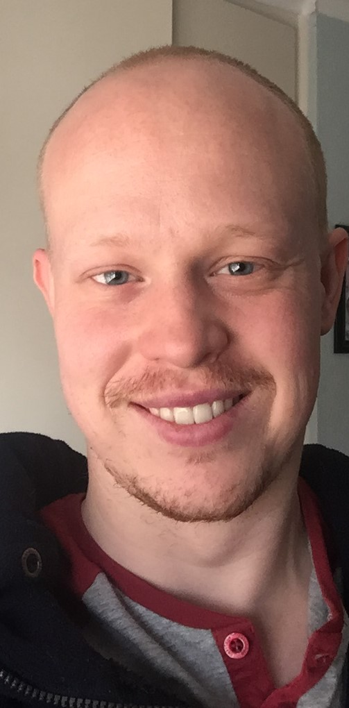

My Resume

Summary
Passionate web developer with a deep love for coding and a specialization in VR programming, 3D modeling, and texturing. I thrive on creating immersive virtual environments and interactive web applications. Skilled in project management, with a proven history of leading teams and delivering projects on time and within budget. My enthusiasm for coding drives me to continually push the boundaries of web development, ensuring engaging and innovative user experiences.
Education
- Bachelor's Degree in Visual Communication - The Open Window School of Visual Communication
- Udemy - The Unity C# Survival Guide
- Udemy - The Complete 2023 Web Development Bootcamp
Work Experience
- 3D Modeller - Carel Controls (December 2010)
- Junior Project Manager, Unity Developer, 3D
Modeller and Graphic Designer - STS3D
Skills
- Unity C#
- 3D Modelling and Texturing
- Unity
- Adobe Suite (Photoshop, After Effects, InDesign, Illustrator)
- Project Management
- Scriptwriting
- VR Development
- Blender
- Krita
- Substance Painter
- Graphic Design (Icons and UI)
- Game Optimisation
- Compositing
- Lean UX
- Microsoft Suite (Excel and Word)
- Git
- HTML
- CSS
Accomplishments
- Converted a normal PC training program to a Virtual Reality
Experience for the Vive Focus for the University of
Johannesburg.
- Recreated an entire interactive mine for the University of Pretoria's 360 Degree Screen
- Most recently I managed and worked on the world's first high
quality mixed reality VR Barring program for Glencore.
- I also made a series of product videos for Sasol (solo project)
during which I drastically improved the quality of my company’s
animations while reducing costs. These visuals are used in a lot
of their catalogues for their clients.
My Showreel
Contact Me